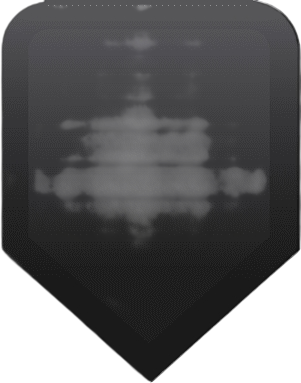
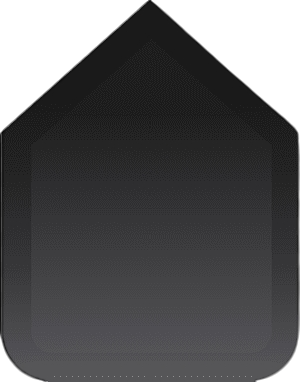

Contrôles de la manette
| Bouton / Stick | Action |
|---|---|
| Avancer | |
| Reculer | |
| Aller à gauche | |
| Aller à droite | |
|  | Descendre |
|  | Monter |
 |
Tourner à gauche |
 |
Tourner à droite |
| Atterrir | |
| Arrêt d'urgence |
Conseils d'utilisation
- Vérifiez que la batterie est suffisante avant le décollage.
- Commencez par des mouvements lents pour vous habituer aux contrôles.